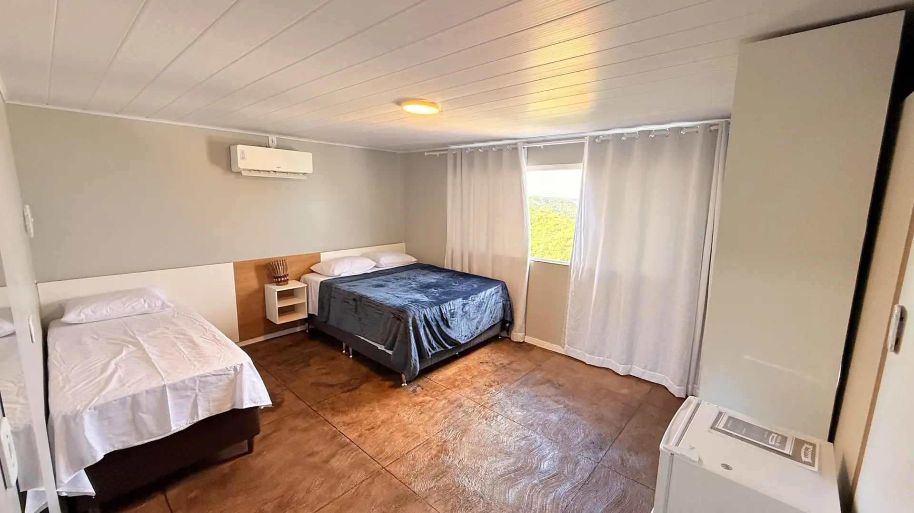
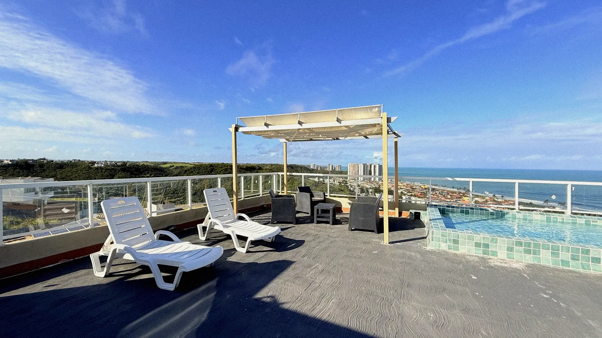
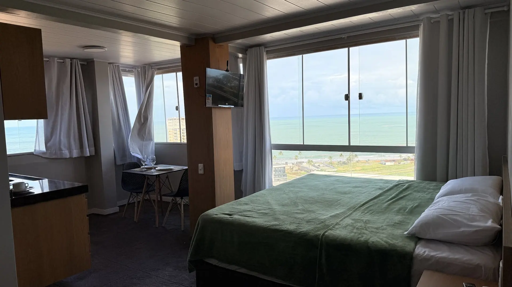
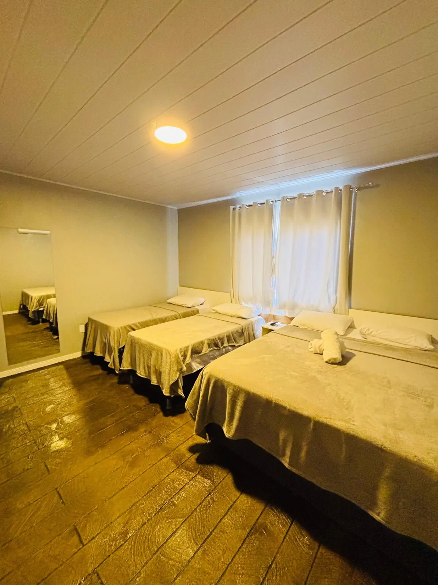
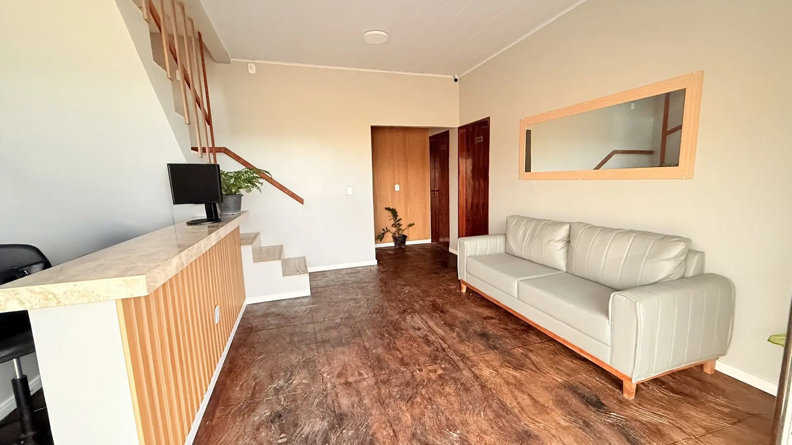
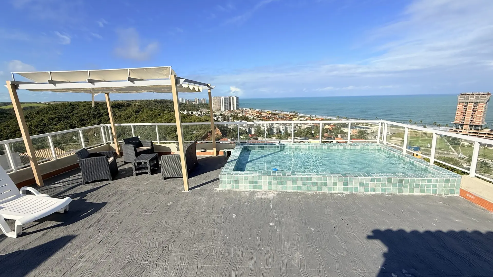
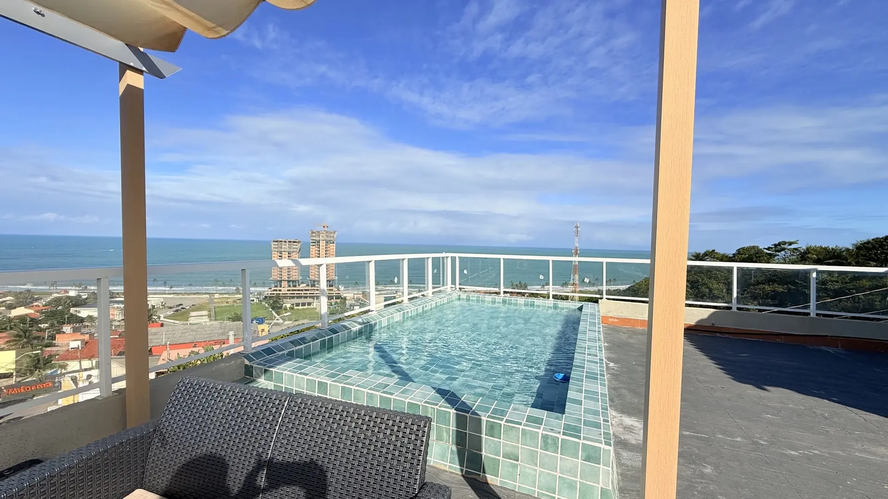
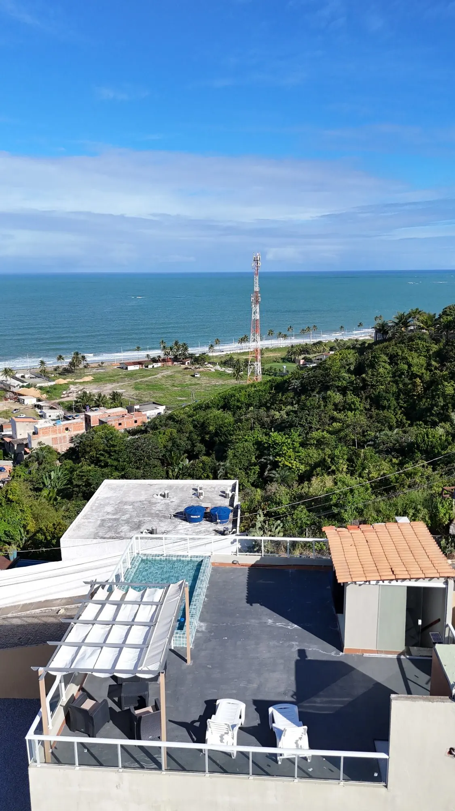
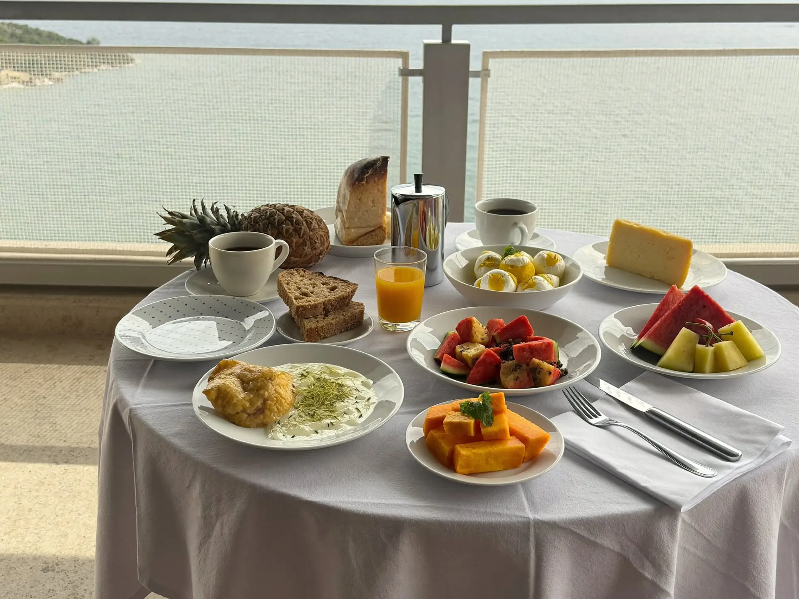
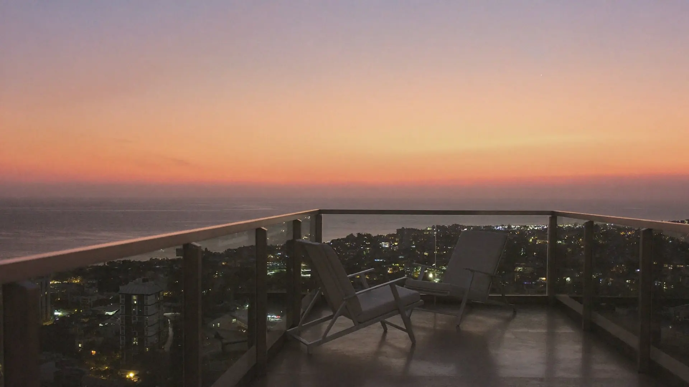

Casal ou trio
Cama de casal e de solteiro, ar-condicionado, frigobar e TV.

Uma pousada pequena no alto de Jacarecica, com piscina no terraço e o mar de Maceió na janela
Ver disponibilidade
A Casa Silva é nova, pequena e tranquila. Os quartos são amplos e climatizados, as camas são das mais elogiadas pelos hóspedes, e do terraço dá pra ver o mar de Jacarecica o dia inteiro.

Cama de casal e de solteiro, ar-condicionado, frigobar e TV.

Quarto amplo, com espaço de sobra pra quem viaja com os filhos.

Sala de estar com sofá e o quarto no andar de cima.



Piscina com borda de vidro, espreguiçadeiras e o mar de Jacarecica no horizonte. Dá pra começar o dia com um mergulho e terminar vendo o pôr do sol.
Quero me hospedar
Tapioca, cuscuz, mandioca, batata-doce, frutas e bolo, do jeito que os hóspedes contam nas avaliações. E a equipe da casa é sempre muito atenciosa.
Jacarecica fica logo ali embaixo. E a orla mais famosa da cidade, de Jatiúca à Pajuçara, fica a uns 15 minutos de carro.
“Tudo muito novo, local tranquilo, de fácil acesso e bem localizado, perto de praias, shopping e mercados.”
Hóspede no Google“As moças da limpeza e da cozinha são muito atenciosas. As camas do quarto são super confortáveis.”
Hóspede no Google“Os quartos são limpos, iluminados e muito confortáveis. A piscina é ótima e bem cuidada.”
Hóspede no Google
Dezembro e janeiro lotam rápido. Chama no WhatsApp, fala as datas e quantas pessoas, que a gente te responde com os quartos disponíveis.
Reservar pelo WhatsAppFotos das praias: Wikimedia Commons · Daniel Alves (domínio público), Maila Salmazzi (CC BY-SA 4.0), Ajuliafotos (CC BY-SA 4.0), Marinelson Almeida (CC BY 2.0)